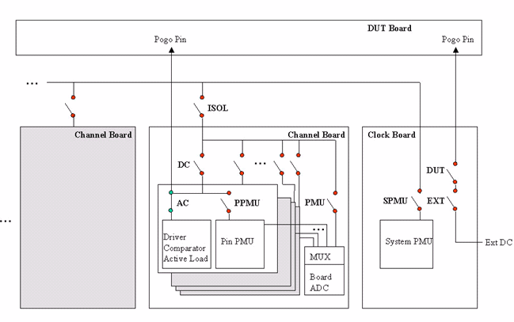

Connect
This test method connects the test system to the DUT.
Note It is only available for universal test method.
This test method performs the following operations:
- Connects AC relays to DUT inputs, and AC relays to DUT outputs and bidirectional pins.

- Powers up the supplies to the DUT in the same order as defined in the pin configuration
setup.
The DUT supply pins are connected in the same order as defined in the pin configuration setup, then the DPS powers up the supply to the supply pins with taking the wait time defined in the level setup after each DPS channel is connected.
- Sets sequencer to break/on state.
Dependencies
Avoid changing the sequencer state from OFF to BREAK at the firmware command level and subsequently making a call to the connect test method, as this will result in hot switching the AC relays.
- If the connect sequence cannot be executed successfully, the previous test system state will be recovered.
- Should this recovery fail, the state will be set to either CONNECTED or DISCONNECTED depending on the actual state of the hardware. If this occurs, extra warning messages will be displayed in the Report Window.
Functional changes
- Introduced in SmarTest 6.5.2